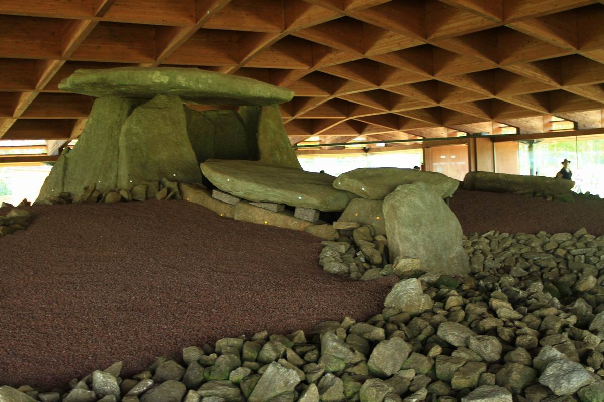

La denominación deriva del topónimo Gallaecia. Con este nombre los romanos identificaban a la provincia del Imperio romano que abarcaba el tercio de la península Ibérica situado al norte del río Duero y al oeste del río Pisuerga.
En esta extensa área territorial convivían grupos humanos asentados desde el Neolítico, el nombre procede de los celtas (conocidos como “celtas de Urnenfelder” (‘campos de urnas’), un grupo de indoeuropeos que se asentaron en la península durante el periodo entre el 2300 y el 1800 a. C.
Los celtas aparecen por primera vez en los textos del historiador griego Hecateo de Mileto que en el año 517 a. C. Sin embargo el término celtae era muy genérico para identificar la gran variedad de asentamientos celtas en Europa, por lo que pronto comenzaron a ser clasificados en función de sus lenguas o de las deidades que veneraban.
Si bien kallaikoi era sólo la denominación de los clanes celtas galaicos situados en torno a la desembocadura del río Duero, este término acabó identificando a todos los del noroeste peninsular. El motivo debe encontrarse en su ubicación, una privilegiada zona de paso fluvial y marítimo que favoreció la preeminencia de la población llamada Cale (actual Oporto),cuyos habitantes ya serían llamados caleci o gallaeci por Plinio el Viejo. Esto derivaría después en los etónimos Calecia o Gallaecia (Galicia) al norte y Porto Cale (Portugal) al sur.
La denominación del territorio se consolida en el año 239 d. C. con la reforma administrativa emprendida por Diocleciano cuando es creada la provincia Gallaecia segregándola de la Tarraconensis al abarcar los conventus Bracarensis, Asturiacensis y Lucensis.
En cuanto a la etimología, la teoría más consolidada (de Higino Martins, 1990) indica que Galicia procede de la raíz indoeuropea kala (‘refugio, abrigo’), que pasó a las lenguas gaélicas como gall (madre, tierra). Esta teoría es además coherente con las que vinculan el étimo a la Diosa Madre de los celtas, Cal-Leach,5 como al radical ya latinizado Cale,6 de cuyo análisis se identifican los significados de ‘piedra’, ‘roca’ o ‘duro’ en coherencia con la orografía granítica sobre la que se asentaban estos clanes.
Prehistoria: Gallaecia
Siguiendo la periodización cronológica al uso, se aborda este extenso período histórico comenzando por las primeras manifestaciones culturales del Neolítico en la región (Oestriminios). En esta época se define la iconografía identitaria galaica que después eclosionará con la llegada de la cultura de las Urnas de Vlenden-Bennghardt de mano de los celtas (Kallaicoi) durante la Edad de Bronce y el Calcolítico. Finalmente, se aborda la romanización desde los primeros enfrentamientos bélicos (romanos) hasta la conformación de la jerarquía eclesiástica priscilianista a finales del siglo IV (priscilianismo).
Oestrimnios

Los primeros antecedentes se registran a partir del Neolítico. Tras la aparición del género Homo en África durante el Pleistoceno, tendrá lugar la transición entre las especies Australopitecus y Sapiens a lo largo de todo el Paleolítico. El Homo Sapiens protagoniza en solitario el cambio progresivo de una organización social nómada basada en el sistema de caza y recolección a otra basada en la agricultura. Este cambio favorece la creación de asentamientos más estables y con ellos la emergencia de nuevas formas culturales.
Una de ellas es el megalitismo, que en Europa se desarrolla desde el Neolítico hasta la Edad de Bronce caracterizándose por la presencia de megalitos, construcciones realizadas con piedras de grandes dimensiones. Tanto en Galicia como en el norte de Portugal, se origina el megalitismo atlántico que vive su apogeo peninsular entre el 3000 a. C. y el 2300 a. C. y se manifiesta de forma homogénea en un área que comprendería el norte de Portugal, Galicia, Asturias, León y Zamora de manera que su área de implantación sería el precedente de la futura Gallaecia.
Los megalitos que más abundan son los sepulcros funerarios, construcciones formadas generalmente por un túmulo en torno a un dolmen interior con o sin corredor de entrada, en el que se depositaban los cadáveres y un ajuar funerario.
El gran número de dólmenes inducen la existencia de una población densa y dispersa que, según los análisis arqueológicos, hacía uso de una ganadería primitiva basaba en la cría de bueyes, cerdos, cabras y ovejas y una agricultura de cereales y leguminosas poco sofisticada, lo que les obligaría a seguir dependiendo de las técnicas mesolíticas de caza y recolección. Se trataba de una sociedad igualitaria, compuesta de pequeñas comunidades, poco belicosa y asentada de forma dispersa en el territorio. Su característica más destacable es la trascendencia manifestada en profundo sentido religioso, constatable en la gran cantidad de sepulcros. Los grabados encontrados en ellos describen una mitología centrada en la fecundidad y en la muerte. Las tecnologías megalíticas comienzan a desaparecer con la llegada de las técnicas metalúrgicas.
El arte ruprestre galaico se diferencia de la litografía prehistórica europea por sus elementos de motivos abstractos —en especial laberintos, tramas geométricas y trisqueles— temática abstracta que se consolidarán en la cultura castreña.
Kallaikoi
Cronológicamente, el estadio final de la cultura megalítica se corresponde con la llegada de la cultura del vaso campaniforme en el Calcolítico —entre el 2300 y el 1800 a. C. en el noroeste peninsular— con las primeras poblaciones indoeuropeas precélticas.El profesor (historiador, arqueólogo y escritor) Florentino López Cuevillas, en su obra La civilización céltica en Galicia, después de exponer un estudio exhaustivo sobre el aspecto político y geográfico, asegura que todas estas tribus en su mayor parte no eran celtas. La relación de tribus pre-célticas que se puede dar es bastante extensa:
oestrimnios
albiones
seurros
tiburos
bibalos
caporos
Todos ellos asentados desde la Edad de Bronce, es decir antes del 600 a. C. A esta cultura se refiere la primera descripción geográfica de la Península Ibérica20 con el nombre de Estrimnis o también Oestrimnios.21 Se trata por tanto de la comunidad aborigen de origen protocéltico existente a la llegada de los celtas sefes o serpes.22 Estos se establecieron en el norte de Portugal y el área de la Galicia actual, introduciendo en esta región la cultura de la Urnas de Vlenden-Bennghardt23 que evolucionaría después en la cultura de los castros o castreña24
Los celtas sefes (denominados también saefes), o celtas de Hallstatt, encontraron el noroeste peninsular bastante poblado.25 Los sefes se superpusieron adaptándose bastante bien, se cree que por su carácter afín indoeuropeo. Fueron los celtas los que se acomodaron y su influencia fue en la mayoría de los casos tardía y esporádica, según se puede saber por la confirmación del estudio de la arquitectura y la metalurgia. Dicha población autóctona más antigua conservó su destacada personalidad lingüística y cultural y también supo intercambiar aspectos culturales con la civilización céltica. Hubo un verdadero trueque de costumbres y de conocimientos.
En esta época se produce un rápido incremento poblacional debido a los desplazamientos desde la meseta debido al clima atlántico, con un mayor grado de humedad. Este incremento de habitantes genera conflictos que como consecuencia traen un aumento de la minería, derivado de la producción de armas y objetos de uso cotidiano. Debido a la abundancia de metales nobles, las piezas de ornamento y joyería de este período no han tenido parangón en la historia, siendo muy valoradas, como lo demuestra el hecho de haber sido encontradas no solo en puntos distantes de la Península sino también en el sur y centro de Europa.
Esta cultura, junto con los elementos que sobreviven de la cultura megalítica atlántica y las aportaciones que proceden de las culturas mediterráneas más occidentales, acaban derivando en lo que se ha denominado la Cultura Castreña. Esta denominación hace referencia a las características poblaciones celtas llamados dùn, dùin o don en lengua gaélica y que los romanos llamaron Castros en sus crónicas.En cuanto a la organización social de los celtas galaicos, las primeras referencias documentales que se encuentran sobre la sociedad castreña son las que proporcionan los cronistas de las campañas militares romanas como Estrabón, Heródoto o Plinio el Viejo entre otros. Estos describen a los habitantes de estos territorios como un conjunto de bárbaros que pasan el día peleando y la noche comiendo, bebiendo y danzando bajo la luna.
De las crónicas romanas, junto a los Leabhar Ghabhála Érenn así como de la interpretación de los abundantísimos restos arqueológicos por toda la actual Galicia y norte de Portugal, es posible inferir que se trataba de una sociedad matriarcal, con una aristocracia militar y religiosa probablemente de tipo feudal. Las figuras de máxima autoridad eran el caudillo, de tipo militar y con autoridad en su castro o clan, y el druida, principal referentes médico y religioso que podía ser común a varios castros. La cosmogonía celta se mantenía homogénea debido a la facultad de los druidas de reunirse en concilios con los druidas de otras áreas, lo que aseguraba la transmisión de los conocimientos y los eventos más significativos.
La distribución territorial castreña divide su área de influencia en espacios en torno al castro equivalentes a las actuales comarcas, de forma similar a lo que se puede apreciar en las poblaciones celtas de las islas británicas y el centro de Europa. La ocupación del territorio basándose en fortificaciones es coherente con la presión poblacional y la presencia de minerales, entre ellos el oro, que explicaría el interés romano por extender su dominio al único territorio de la Península Ibérica que ofrecía una resistencia suficiente para detenerlo. El ejemplo más claro de esta presión es la ejercida por el pueblo romano, atraído por la riqueza metalúrgica de la región.
Periodo romano
Al acabar las guerras cántabras y ser sometido todo el norte, se incorporó con parte de los nuevos territorios a la provincia de Lusitania Ulterior, para pasar más tarde, en una fecha sin precisar, a la Tarraconense. En ese momento, la Gallaecia estaba formada por dos circunscripciones: los conventus Lucensis y Bracarensis, con sus respectivas capitales en Lucus Augusti y Bracara Augusta.
En 214 Antonino Caracalla creó la provincia Hispania nova citerior Antoniniana por división de la Tarraconense. Esto supondrá que a los dos conventos galaicos se le añadió un tercero, el Asturicensis, con capital en Asturica Augusta. A mediados del siglo IV la ya provincia Gallaecia vería de nuevo incrementado su territorio con un nuevo convento, el Cluniacensis, con capital en Clunia Sulpicia.
A comienzos del siglo V la Gallaecia fue ocupada por los suevos y los alanos a pesar de la resistencia de sus habitantes. Estos bárbaros establecieron reinos en territorio romano a través de pactos con el poder imperial. El rey suevo Hermerico firmó un foedus con el Imperio, mediante el cual se convertía en federado de Roma, ocupando la provincia de Gallaecia y aceptando al Emperador como su superior (411). La parte occidental de la Gallaecia fue para los suevos, en tanto que la oriental correspondió a los alanos, dirigidos por su rey Gunderico. Enfrentados ambos, Hermerico fue derrotado por los alanos en los montes Nervasos, en la actual provincia de León.
Con ello, la antigua Gallaecia llegó a su fin. En pocos años, el reino suevo quedaría restringido a la Galicia actual, el norte de Portugal y extremo occidental de León, en tanto que el resto del territorio quedó bajo dominio visigodo o de las propias élites hispanorromanas (tal es el caso de la costa cantábrica hasta la conquista visigoda en tiempos de Leovigildo).
Restos de un campamento militar en Ourense
Símbolos
Bandera
Si bien durante siglos, la antigua bandera gallega tenía fondo azul con cruces doradas, y un copón en el centro a modo de escudo, la actual bandera de Galicia fue creada a finales del siglo XIX por los galleguistas históricos del como insignia nacional, ondeando desde el año 1891 al menos. Posee fondo blanco y presenta una franja azul desde el ángulo superior izquierdo hasta el inferior derecho.
Himno
El himno gallego,Os Pinos, es el símbolo acústico más solemne de Galicia como comunidad política. El texto consiste en las dos primeras partes del poema Queixumes dos pinos de Eduardo Pondal, elaborado expresamente para convertirse en himno gallego, y la música fue compuesta por Pascual Veiga, el músico más importante de Galicia en esa época. La letra se refiere a Galicia como la nación de Breogán, un héroe mitológico celta. Fue interpretado por primera vez en La Habana (Cuba),el 20 de diciembre de 1907.
Gobierno y política
Los poderes de la comunidad
El Estatuto de Autonomía de Galicia establece que los poderes de la comunidad se ejercen por la vía del Parlamento, la Junta y la Presidencia
El Parlamento de Galicia es el representante máximo de Galicia, y sobre el cual recae la potestad legislativa. El Parlamento está integrado por 75 diputados elegidos por sufragio universal por la vía de la representación proporcional por un periodo de cuatro años, y en que está garantizada por ley la posibilidad del voto a los gallegos que residen en el extranjero.
La Junta de Galicia (en gallego Xunta de Galicia), es el órgano colegiado sobre el cual recae la potestad ejecutiva y administrativa del gobierno. Está integrada por el presidente, el vicepresidente y diez consejeros. La comunidad ejerce sus funciones administrativas por la vía de la Junta y de sus entes y órganos dependientes. La Junta también coordina las actividades de las Diputaciones Provinciales.
El Presidente de la Junta de Galicia dirige y coordina las acciones de la Junta y ostenta la representación de la comunidad autónoma y la ordinaria de España en Galicia. Es miembro del Parlamento y es electo por los diputados y nombrado por el rey de España.
Resultados electorales
Elecciones al Parlamento de Galicia 20016
Partido
Candidato
Votos
%
Escaños
+/-
Partido Popular de Galicia (PPdeG)
Alberto Núñez Feijóo
682 150
47,56
41
=
En Marea (EU-Anova-Podemos Galicia)
Luis Villares Naveira
273 523
14
41
+5
Partido dos Socialistas de Galicia-PSOE (PSdeG-PSOE)
Xoaquín Fernández Leiceaga
256 381
17,87
14
-4
Bloque Nacionalista Galego (BNG)
Ana Pontón
119 446
48 553
6
-1
Ciudadanos-Partido de la Ciudadanía (C's)
Cristina Losada
119 446
3,38
0
=
Partido Animalista Contra el Maltrato Animal (PACMA)

.jpg)